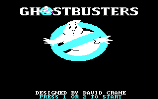
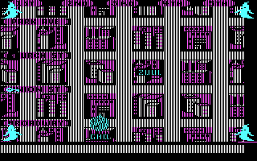

名稱：魔鬼剋星1 (Ghostbusters，英文版) 簡介：Activision 1984年出品的動作遊戲 [待補]。

保護：無，DosBox必須採用"boot gb.img"的Booter方式進入遊戲。 備註：電腦速度不可過快，DosBox建議cycles在500左右。 操作：遊戲只支援搖桿，DosBox必須進行下列設定，用鍵盤來模擬搖桿： joysticktype=2axis buttonwrap=true 然後找mapperfile的定義（DosBox 0.74是mapper-0.74.map），修改該檔案內容，變更下列 定義： jbutton_0_0 "key 306" "stick_0 button 0" "key 306" jbutton_0_1 "key 308" "stick_0 button 1" "key 308" jaxis_0_1- "key 273" "stick_0 axis 1 0" "key 122" jaxis_0_1+ "key 274" "stick_0 axis 1 1" "key 119" jaxis_0_0- "key 276" "stick_0 axis 0 0" "key 97" jaxis_0_0+ "key 275" "stick_0 axis 0 1" "key 115" jhat_0_0_0 "stick_0 hat 0 1" jhat_0_0_3 "stick_0 hat 0 8" jhat_0_0_2 "stick_0 hat 0 4" jhat_0_0_1 "stick_0 hat 0 2" 亦即： 移動 = 上下左右 左按鈕 = 左Ctrl 右按鈕 = 左Alt